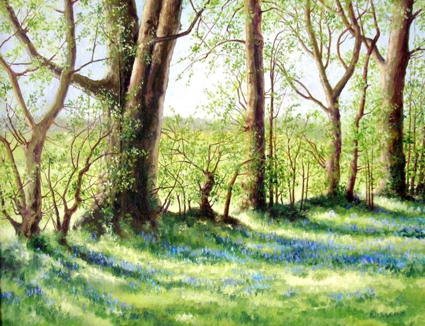
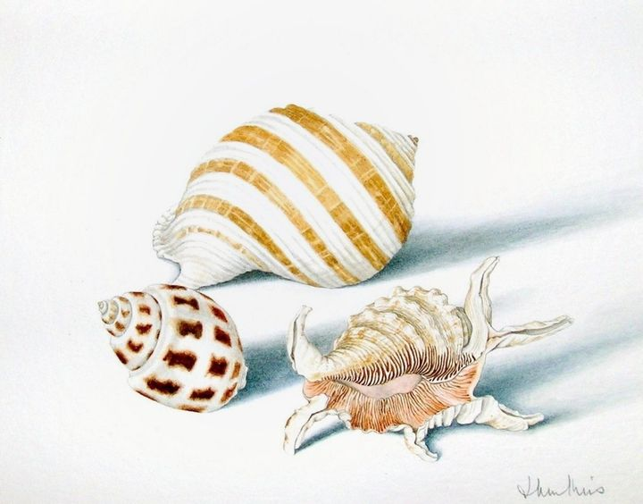

Sold
Paintings that have found homes.
 Marsh Irises by MoonlightWatercolour on paper · Sold
Marsh Irises by MoonlightWatercolour on paper · Sold A Country PathOil on canvas board · Sold
A Country PathOil on canvas board · Sold Moonlit SeascapeOil on canvas board · Sold
Moonlit SeascapeOil on canvas board · Sold Inside the WaveOil on canvas board · Sold
Inside the WaveOil on canvas board · Sold Three Birch Trees in AutumnOil on canvas board · Sold
Three Birch Trees in AutumnOil on canvas board · Sold Landscape with Birch TreesOil on canvas board · SoldTwo Dogs in the Pea FieldsOil on canvas board · Sold
Landscape with Birch TreesOil on canvas board · SoldTwo Dogs in the Pea FieldsOil on canvas board · Sold Birch Trees in Spring with DandelionsOil on canvas board · Sold
Birch Trees in Spring with DandelionsOil on canvas board · Sold Trees in WoodWatercolour on paper · Sold
Trees in WoodWatercolour on paper · Sold Birches in autumnOil on canvas board · Sold
Birches in autumnOil on canvas board · Sold Redroofed barn - FranceWatercolour on paper · Sold
Redroofed barn - FranceWatercolour on paper · Sold
Bluebells in the hedgerowOil on canvas board · Sold
Study of three ShellsWatercolour on paper · Sold Steph's ShellWatercolour and pencil on paper · Sold
Steph's ShellWatercolour and pencil on paper · Sold Lavender field near PetersfieldSold
Lavender field near PetersfieldSold